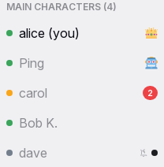

Presence
Presence is what Yap tells people about each other's current state: who is online, whether they are away or invisible, when they come and go, and who is typing in the open conversation. It is shown in the sidebar's people list, in the header's status chip and count, in the profile card, in the typing strip above the input box, and in the lobby's join and leave lines. The rules here decide what those places show.

Rules
Status
PR-01An account has one status: online, away or invisible. "Offline" is not a status; it means the person has no connection. The status belongs to the account, not to a device: a pick on one device applies everywhere at once.
PR-02The user chooses the status in the status menu. A new account is online. The chosen status is remembered until the user changes it, also across a reload, a new app start and a server restart.
PR-03Colours are fixed: green for online, orange for away, grey for invisible and offline. Themes never change them.
PR-04Away has two sources: chosen, or automatic. Others see the same orange for both. An automatic away keeps the chosen status underneath: the chip shows orange, the menu still marks "Online". A chosen away ends only with a new pick.
PR-05Invisible people appear offline to everyone else: a grey dot, "Offline" on the profile card, a place among the offline people, no join or leave line, and no count. They keep full use of the chat and see everyone else's real status. Admins see "Invisible" on the administration page. An invisible person who types in a conversation is shown as typing there.
Who is online
PR-06A person is online while at least one of their devices has an open chat page. All tabs and devices of one person make one entry in the list and count once.
PR-07The online count is the number of people online or away, the bot included, invisible people excluded. The user counts themself.
PR-08Changes reach everyone at once: a person who joins, leaves or changes status appears, disappears or changes colour in every open list within a second.
PR-09The bot is always online.
Automatic away
PR-10A person becomes away when none of their devices has had any input for 5 minutes. Input is a key, a tap, a pointer move, a wheel movement, or a return to the tab. Incoming messages are not input. The change shows to others within about 10 seconds of the 5 minutes.
PR-11A hidden tab does not make a person away by itself; the 5 minutes count. Watching a video for 5 minutes without input shows the person as away. Both are accepted.
PR-12Automatic away applies only to a person whose chosen status is online. A chosen away or invisible never changes by itself.
PR-13Any input on any device ends an automatic away within a few seconds. Returning to the tab ends it at once. A pick in the status menu ends it at once.
Leaving
PR-14Closing the last tab, signing out, or "Sign out other devices" takes the person out of the list at once.
PR-15When a connection drops without the tab closing (network loss, phone sleep, a closed laptop), the person shows as away after 30 seconds, unless another of their devices is visible and active. A visible device blocks the change so that a locked phone does not turn an attended desktop orange.
PR-16A person whose every connection has been gone for 5 minutes is shown offline and leaves the list. A connection that returns before that keeps the chosen status and announces nothing.
PR-17A join is a person's first connection; a leave is the loss of their last one. The lobby shows a join or leave line to the people who have the lobby open at that moment. A leave is shown only after the person has been gone for 30 seconds, and a return within that time cancels it, so a reload shows nothing. Line texts are on the message row page.
PR-18The bot tells the admin in a direct message when a new account joins for the first time: "👋 {display name} just joined the chat!".
Typing
PR-19"X is typing" is shown only in the typing strip of the open conversation, to the people who have that conversation open. It never appears in the sidebar, the header, the tab title or a notification. In a direct message only the other person sees it.
PR-20The indicator appears within about a second of the first keystroke and disappears 3 seconds after the last one, at once on send, when the draft becomes empty, when the typist leaves the conversation, and when the typist's tab goes hidden. A dropped connection ends it like a last keystroke.
PR-21Several people typing are shown by one of the configured texts for two, or for three or more, with display names. The typist never sees their own name, also not from a second device. The text changes only when the set of typists changes.
PR-22Typing is shown in a read-only room too, since people with permission can write there. Editing a message does not count as typing.
What presence is not
PR-23No last-seen time is shown anywhere. An offline person's card says "Offline".
PR-24Status changes nothing about delivery, sending, reactions or access. Away has no automatic reply. Away does not suppress notifications on other devices; a visible open session does. See Notifications and unread.
PR-25A person's device type is shown only to themself in Settings and to admins, never to other people.
States
| State or trigger | Input | What the user sees |
|---|---|---|
| Status pick | mouse, touch | Chip and own dot change at once on every device; the menu marks the pick. |
| 5 min without input on every device | all | Others see orange; the own chip turns orange; the menu still marks Online. |
| Any input while automatically away | keyboard, mouse, touch | Green again within a few seconds; at once on tab return. |
| Chosen Away, input | all | Stays orange. |
| Invisible | all | Grey to others, "Offline" on the card, not counted; own view unchanged. |
| Second device joins | all | Same status everywhere; the count does not change. |
| Last tab closed or sign out | all | Gone from the list at once; leave line after 30 s unless back. |
| Connection drops, tab open | all | Orange after 30 s unless another device is visible; offline after 5 min. |
| Connection returns within 5 min | all | Chosen status again; no join line. |
| First keystroke in a conversation | keyboard, touch | Others in it see the typing text within a second. |
| 3 s without typing, send, empty draft, leave, hidden tab | all | Typing text gone. |
| Two or more typing | all | The two-person or three-or-more text; the viewer's own name left out. |
| New account's first join | all | Join line in the lobby; bot message to the admin. |
Wording
| Where | Text |
|---|---|
| Status menu | "Online"; "Away"; "Invisible" |
| Profile card status | "Online"; "Away"; "Offline" |
| People section title (configured; defaults) | "the gang ({0})", "squad check ({0})", "main characters ({0})", "{0} legends present", "chat fam ({0})"; fallback "Online Users ({0})" |
| Typing, direct message | "{name} is typing..." |
| Typing, room (configured lists for one, two, three or more) | see the input box page |
| Bot to the admin | "👋 {display name} just joined the chat!" |
| Settings, sessions | "Active Sessions"; "This device"; "Active {time}" with "just now", "{n}s ago", "{n}m ago", "{n}h ago", "{n}d ago" |
| Administration, status pills | "Online"; "Away"; "Invisible"; "Offline" |
Related
- Header, sidebar and overlays for the chip, the menu, the count and the people list.
- Input box for the typing strip and what starts typing.
- Message row and actions for the lobby join and leave lines.
- Notifications and unread for what a visible session suppresses.
- Settings for the list of the user's own sessions.
- Administration for the sessions table admins see.